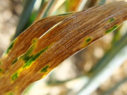

Available KnetMiners for Plant and Animal networks


Plant Diseases Version 3.0.1
Plant Diseases

Plant Diseases Version 3.0.1
Plant Diseases
Discovery of causal genes in QTL is often like finding a needle in a haystack. KnetMiner can efficiently mine and prioritise all QTL genes, show overlaps with public QTL/GWAS studies and help to understand the biological networks controlling complex traits.
Is not a trivial task as published in Hassani-Pak et al. (2016). You can use the free Ondex-KnetBuilder CLI (not easy to use, limited support) or the paid Genestack-KnetBuilder module within the Genestack Bioinformatics platform (easy to use, good support).
Transcriptomics studies can generate many differentially expressed genes. KnetMiner can mine a gene list for known associations with certain keywords, e.g. flowering or drought resistance and help to elucidate the biological networks or pathways connecting them.
The KnetMiner code is open-source and customizable. You can host your own KnetMiner server or use the paid Genestack-KnetMiner module to easily deploy a KnetMiner server in the cloud. Contact us for more information.
The user is guided when writing the search terms through features such as real-time user feedback and query term suggestions. The output is dynamic and rich in detail including different visualisations such as tables, networks and genome maps that are easy to navigate.